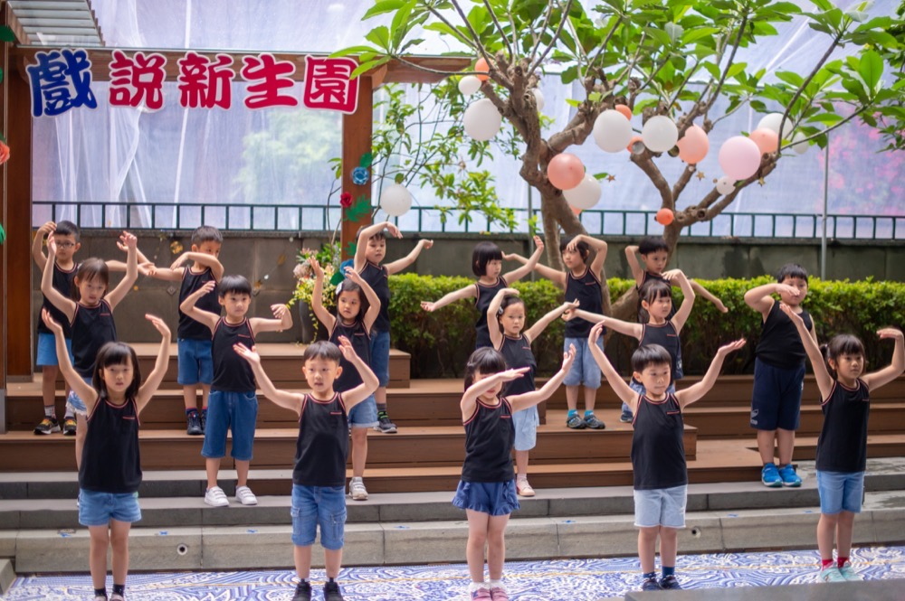
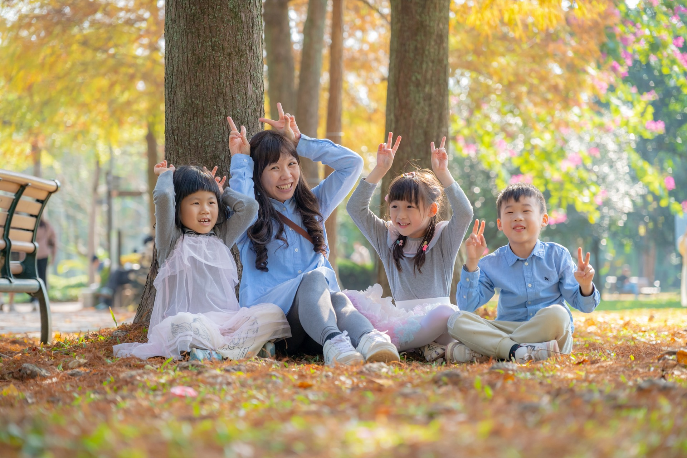

文章摘要
本文以幼兒園老師、學校企劃與家長會為對象，整理畢業典禮的常見流程、節奏掌控方式，以及容易讓家長感動的橋段設計。內容涵蓋適合幼兒園的典禮遊戲、親子互動環節、舞台與進場設計、頒發證書與謝師橋段的創意做法，並說明如何兼顧秩序、感動與趣味，以及若希望留下更好的照片與影片，流程安排上應注意的事項。目的在提供具規劃感、實用性與啟發性的參考，而非僅止於列點。
幼兒園畢業典禮流程設計、創意遊戲與感動橋段規劃
幼兒園畢業典禮是孩子人生中第一個正式的「畢業」場合，對家長來說更是情感濃度很高的時刻——從入園到畢業，幾年間的成長跟感謝，常常在典禮的某幾個瞬間一次湧現。園所則要在一場典禮裡同時做到：流程順暢、節奏明快、有儀式感也有溫度、孩子跟家長都能參與、並且在秩序中留下值得回憶的畫面。這篇從流程設計、感動橋段、遊戲跟親子互動、以及跟攝影紀錄的配合等面向，整理實務上可用的做法跟注意事項，給幼兒園老師、學校企劃或家長會一點參考。
一、畢業典禮常見流程安排
1.1 基本架構
台灣幼兒園畢業典禮的流程，多數會包含以下幾個區塊（順序與細項可依園所調整）：
- 開場：主持人（多為園長、主任或教師代表）開場白，歡迎家長與來賓，簡短說明典禮意義與流程。
- 園長／主任致詞：向畢業生表達祝福與期許，時間建議控制在 3～5 分鐘內，避免過長導致幼兒與家長分心。
- 來賓或家長代表致詞：若有邀請來賓或家長代表，可安排在此，同樣以簡短為宜。
- 幼兒表演：各班或畢業生的才藝演出——唱歌、舞蹈、朗誦、律動等，是典禮中「由孩子當主角」的段落。
- 頒發畢業證書：逐一唱名，幼兒上台從園長或來賓手中接過畢業證書，並可設計鞠躬、握手或合影。
- 謝師／感恩環節：幼兒向班級老師、園長或全體教職員表達感謝，常見形式為獻花、鞠躬、擁抱、朗誦謝師詩或手語歌。
- 結尾：主持人總結、祝福，可搭配大合照或全場一起唱一首再見歌，為典禮畫下句點。
上述架構可視園所規模、時間與特色增刪。例如有的園所會加入「在校生歡送」、有的會安排「親子共舞」或「家長獻花給孩子」，只要節奏清楚、前後連貫即可。
1.2 時間長度建議
- 總長：整場典禮建議控制在 60～90 分鐘內。超過 90 分鐘，幼兒容易疲憊、家長也可能開始離席或滑手機，反而削弱結尾的凝聚力。
- 各段落：開場與致詞合計約 10～15 分鐘；幼兒表演可依班級數與節目數分配，每支約 3～5 分鐘；頒證環節若人數多（例如 50 人以上），可考慮分梯或加快唱名節奏，整體約 15～25 分鐘；謝師與結尾約 10～15 分鐘。預留 5～10 分鐘緩衝，應付突發狀況或延遲。
二、典禮節奏怎麼抓比較順
2.1 動靜交替
- 動：表演、遊戲、親子互動、頒證時幼兒走動上台。
- 靜：致詞、朗誦、謝師時全場聆聽。
連續兩三個段落都是「坐著聽」，幼兒跟家長都會疲乏。致詞後接表演、頒證中段或後段穿插一兩個短節目（全班合唱、手語等），節奏才會有起伏。
2.2 高潮與收束
- 前半：開場、致詞、第一支表演，建立「正式、溫馨」的基調。
- 中段：頒證是許多家長最期待的環節，可視為典禮的情感高峰之一；頒證前可稍作鋪陳（例如播放回顧影片、或主持人簡短介紹「接下來是頒發畢業證書」），讓家長準備好手機或相機。
- 後段：謝師與結尾要留足時間，不要因為前面拖棚而壓縮謝師。謝師往往是家長落淚的高峰，建議至少保留 5～8 分鐘，讓孩子與老師有真實的互動與擁抱，而不是匆匆走過。
- 收束：結尾時可再一次全體畢業生上台或站在定位，唱一首再見歌、或一起說「謝謝老師、謝謝爸爸媽媽」，然後主持人正式宣布典禮結束，畫面與情緒都較完整。
2.3 過場與銜接
- 每個段落之間要有清楚的「過場」：主持人簡單預告下一段（例如「接下來是某某班的表演」），或播放短音樂、關燈換場，避免冷場或家長不知道現在該看哪裡。
- 若舞台需換布景或道具，可安排一支短影片（例如園所生活回顧）或請主持人與孩子互動填補時間，避免長時間空台。
三、哪些橋段最容易讓家長感動
3.1 頒發畢業證書
孩子被唱名、獨自或跟老師一起走上台、從園長手中接過證書、鞠躬或敬禮——這個「被認可、長大了」的瞬間，對家長極具象徵意義。頒證時不妨放慢一點節奏，讓每位孩子至少有 3～5 秒在台上的獨照時間，攝影師跟家長才好拍照。可以設計孩子跟園長或導師的短暫互動（擊掌、擁抱），畫面會更溫暖。場地若允許，讓家長在台下指定區域站立或前移，方便拍到自己孩子上台的畫面，但得事先講好秩序，避免一擁而上。

攝影師小巴老師拍攝
3.2 謝師環節
- 獻花、鞠躬、擁抱、或全班一起朗誦謝師詩、唱《感恩的心》等手語歌，都是常見做法。家長看到孩子向老師道謝、老師紅了眼眶，往往會跟著感動。 謝師不要流於形式化。時間若允許，讓每位孩子有機會親自把花或卡片交給導師、說一句「謝謝老師」或擁抱，而不是全班一起鞠躬就結束。即使每人只有 10～20 秒，累積起來的情感濃度會差很多。若有「老師對孩子說一句話」的設計，事先請老師準備一兩句簡短祝福，在遞證書或謝師時說，家長會覺得「老師真的認識我的孩子」。

攝影師小巴老師拍攝
3.3 回顧影片或照片
- 典禮前或中段播放孩子在園所生活的照片或短片（上課、遊戲、戶外教學、節慶活動），能快速喚起家長與孩子的共同記憶，情緒容易堆疊到頒證與謝師時爆發。
- 影片長度建議 3～5 分鐘，搭配溫和的音樂，避免過長或節奏過快。
3.4 親子互動瞬間
- 若設計「家長上台與孩子合影」「家長為孩子別胸花」「親子共讀一封信」等環節，往往能創造獨一無二的感動。這類設計需要較多流程控管與排練，但若執行得好，家長會印象深刻。
四、適合幼兒園的畢業典禮遊戲
畢業典禮不一定要從頭嚴肅到尾，適度加入遊戲能讓幼兒與家長放鬆，也增加「一起玩」的記憶。以下為常見且較好執行的類型：
4.1 擊鼓傳花
音樂響起時傳遞玩偶或球，音樂一停，拿到的人上台表演一個小才藝（唱歌、說笑話、做鬼臉）或接受小懲罰（比方說一句感謝的話）。可以邀請家長跟孩子一起上台，增加親子同樂感。時間控制在 5～8 分鐘就好，傳太久容易冷場；「懲罰」以溫馨、好笑為主，別讓孩子尷尬。
4.2 親子舞蹈
事先教一首簡單的親子律動或舞蹈（《恰恰恰》《我愛我的家》等），典禮中段邀請家長跟孩子一起站起來跳；可先由畢業生示範，再請家長加入。動作要簡單、重複性高，沒練過的家長才跟得上；音樂選大家熟悉的，氣氛比較容易帶起來。

攝影師小巴老師拍攝
4.3 搶板凳／找位子
- 做法：台上放若干張椅子（比上台人數少一張），音樂響起時大家繞圈走，音樂停時搶坐位子，沒坐到的人淘汰或接受小任務。可限定「親子組」一起搶一張椅子，增加趣味。
- 注意：幼兒搶位子時要注意安全，避免推擠；遊戲輪數 2～3 輪即可。
4.4 互換禮物／祝福小卡
- 做法：典禮前請每位孩子準備一份小禮物或手寫祝福卡，在典禮中段隨機抽籤或依學號與同學交換。可讓孩子上台簡短說「我要送給某某，因為……」，既溫馨又有儀式感。
- 注意：禮物價值要設限（例如 50 元以內或手作），避免比較心態；若班級人數多，可改為「抽幾位代表」上台交換，其餘在台下進行。
4.5 默契問答
- 做法：主持人問「孩子最喜歡的食物」「孩子最喜歡的老師」等問題，家長與孩子分別寫在白板上或舉牌，答案一致則得分。可準備小禮物給得分高的親子組。
- 注意：題目要簡單、有趣，避免讓答錯的家長或孩子難堪。
五、親子互動環節怎麼安排
5.1 時機
- 親子互動較適合放在「頒證之前」或「謝師之前」，讓家長情緒已投入但尚未到最高峰，此時一起動一動、玩一下，能緩和緊張感，也為後續的謝師與結尾鋪墊。
- 避免放在謝師之後，因謝師後許多家長已淚流滿面，若緊接遊戲可能情緒轉折過大。
5.2 形式
- 全場一起：例如親子舞蹈、全體站起來手牽手唱一首歌，參與感高，畫面也壯觀。
- 抽籤上台：例如抽幾組親子上台玩遊戲、或接受祝福，其餘家長在台下觀看與拍照，時間較好控制。
- 台下進行：例如「給孩子一個擁抱」「對孩子說一句話」，不一定要上台，在座位區即可完成，適合人數多、時間有限的場合。
5.3 秩序控管
- 親子環節最容易出現「家長一擁而上」「孩子找不到家長」的混亂。建議事先說明：何時可以離開座位、是否可到舞台前拍照、遊戲規則與時間。若安排家長上台，可依班級或排數分批，避免所有人同時擠向舞台。
六、適合拍照與錄影的流程設計
6.1 預留「攝影友善」時間
- 頒證：每位孩子上台時，建議有 3～5 秒的獨照時間（站定、接證書、鞠躬），再進行下一位。若節奏太快，攝影師與家長往往只拍到背影或模糊畫面。
- 謝師：獻花、擁抱時，可請老師與孩子稍作停留（例如面向觀眾 2～3 秒），方便台下與專業攝影取景。
- 大合照：典禮結束前，可安排「全體畢業生＋老師」的大合照，以及「各班分別與導師」的班級照，並預留 5～10 分鐘讓攝影師指揮隊形與多拍幾張。
6.2 舞台與動線
- 舞台高度與燈光：若場地有舞台，注意燈光是否足夠、是否逆光（背對窗戶會讓臉黑掉）。若有專業攝影，可事先與攝影師確認最佳取景位置與走位。
- 進場動線：孩子上台領證書或表演時的走動路線要固定，避免來回交錯造成畫面雜亂。可在地面貼標記或由老師在側台引導。
- 背景：舞台背景盡量簡潔、與主題一致（例如布條、氣球、畢業主題背板），避免雜物入鏡。
6.3 若希望留下更好的照片與影片，流程上應注意什麼
- 提前與攝影團隊溝通：若邀請專業攝影師或錄影團隊，應事先提供流程表與場地圖，標示頒證、謝師、表演的重點時段，以及希望捕捉的畫面（例如每位孩子上台、謝師擁抱、大合照）。當天最好有園所聯絡人與攝影師保持溝通，方便臨時調整。
- 控制觀眾席秩序：若允許家長離席拍照，建議劃定「拍照區」（例如舞台前兩側、不擋住其他家長視線），避免所有人擠到台前導致推擠或擋住專業攝影鏡頭。
- 預留緩衝：流程表上可預留 5～10 分鐘緩衝，若某段延遲不至於壓縮到謝師與結尾；謝師與大合照盡量不要被壓縮，因為那是多數家長最想留下的畫面。
- 光線與音訊：若會錄影，注意現場麥克風與音樂的平衡（避免音樂蓋過致詞或謝師說話），以及現場光線是否足夠、是否會因窗簾或關燈導致畫面過暗。可與錄影團隊事先場勘。
七、舞台、進場、頒發證書、謝師橋段可以怎麼設計
7.1 舞台
- 主視覺：背板或布條可寫「某某幼兒園第幾屆畢業典禮」「感恩・成長・啟程」等標語，搭配園所 logo 或年度主題色。避免過多文字或圖案，以免拍照時背景雜亂。
- 階梯與動線：若舞台有階梯，可規定「從左側上、從右側下」，避免上下台碰撞。頒證時可安排園長或來賓站在舞台中央，孩子從一側上台、領證後從另一側下台，動線清楚。
- 座位：畢業生座位可安排在舞台前方或中央，面向觀眾，方便家長從觀眾席拍照；若場地是「畢業生背對家長」，家長只能拍到背影，較不利留念。
7.2 進場
- 開場進場：可設計畢業生依班級或依序進場，搭配進場音樂（例如《畢業歌》《驪歌》），讓孩子與家長有「典禮開始了」的儀式感。進場時可安排老師在隊伍兩側或前方引導，避免孩子走散或嬉鬧。
- 退場：典禮結束時可再次播放音樂，畢業生依序退場，或全體一起向觀眾鞠躬後退場，畫面完整。
7.3 頒發證書
- 唱名：可依學號、姓名筆畫或班級順序唱名。唱名時可加上「某某小朋友」或簡短介紹（例如「喜歡畫畫的某某」），增加個人感，但要注意時間，避免每人都長篇介紹。
- 遞證：孩子上台後，可設計「雙手接證書、鞠躬、與園長或導師握手或擊掌、轉身面向觀眾停留 2～3 秒」的流程，再請孩子下台。這樣攝影師與家長都有時間拍到正面與互動。
- 若人數很多：可考慮「分批頒證」——例如每 10～15 人一批上台，其餘在台下等候，避免台上過於擁擠；或改為「園長逐一頒發、孩子排隊上台領取後從另一側下台」，節奏可稍快但仍保留每人獨照瞬間。
7.4 謝師橋段
- 獻花：每位孩子拿一朵或一束花，逐一獻給導師並擁抱。可事先排練「獻花→擁抱→說謝謝老師→回位」的動線，避免台上塞車。
- 謝師詩／手語：全班一起朗誦謝師詩或表演《感恩的心》等手語歌，可搭配背景音樂。若時間允許，可在手語歌後再加「逐一獻花與擁抱」，情感層次更完整。
- 老師說話：可安排導師對全班說一段話（1～2 分鐘），內容可為回憶、祝福與不捨。老師若真誠、甚至哽咽，家長往往會非常感動；但需事先提醒老師控制時間，避免過長。
- 合影：謝師後可安排「全班與導師」的正式合影，以及「每位孩子與導師」的雙人照（若時間允許），作為紀念冊或電子檔的素材。
八、如何讓典禮兼顧秩序、感動與趣味
秩序靠流程表清楚、事先跟老師與工作人員彩排、當天有明確的控場負責人（主任或資深老師）。家長跟來賓的動線（入場、拍照區、離場）要事先說明，必要時用標示或工作人員引導。感動則要把時間留給頒證、謝師跟結尾，不要因為前面拖棚而壓縮這三段——感動來自真實的互動跟足夠的停留（孩子跟老師的擁抱、家長在台下的眼淚），而不是匆匆走過。趣味方面，在中段安排一兩個遊戲或親子環節，讓氣氛從「正式」稍微轉成「同樂」，再拉回謝師跟結尾；趣味跟感動不互斥，關鍵是節奏跟順序安排得當。
九、畢業典禮與攝影紀錄如何互相配合
- 園所：若已邀請專業攝影或錄影團隊，應視其為「典禮流程的一部分」——提供流程表、場地圖、重點時段，並在當天保留取景空間（例如舞台前側不堆雜物、頒證時控制上台節奏）。好的流程設計能讓攝影師發揮更好，反之則容易漏拍或只拍到混亂畫面。
- 攝影團隊：應主動了解流程、場地與園所需求，並在關鍵時段（頒證、謝師、大合照）確保有人手與機位。若發現流程上有不利取景的設計（例如孩子背對觀眾、節奏過快），可禮貌建議園所微調，而非事後才說「沒拍到」。
- 家長：若園所有安排專業攝影，可事先告知家長「會有正式照片與影片提供」，減少家長一擁而上拍照的焦慮；同時可劃定家長拍照區，讓想自己拍的家長有位置，又不影響專業攝影與其他觀眾。
十、結語
幼兒園畢業典禮是一年一度的大事，對孩子、家長跟園所都是情感與記憶的節點。流程設計得當，典禮會順暢、有高潮也有收束；感動橋段留足時間，家長跟老師才能真正沉浸其中；適度的遊戲跟親子互動，則能讓典禮不只嚴肅也有歡笑。園所若同時重視「留下好的照片跟影片」，只要在流程跟動線上稍作配合——頒證時放慢節奏、謝師時保留互動時間、預留大合照時段——專業攝影跟家長自拍都會更有收穫。希望這篇整理能給正在規劃畢業典禮的老師與企劃一點實用參考跟靈感。

攝影師小巴老師拍攝
本文由小巴老師攝影團隊整理，以台灣幼兒園畢業典禮實務為情境。若您的園所正在規劃畢業典禮並考慮攝影紀錄，歡迎透過網站進一步了解我們的畢業典禮攝影服務與流程配合方式。